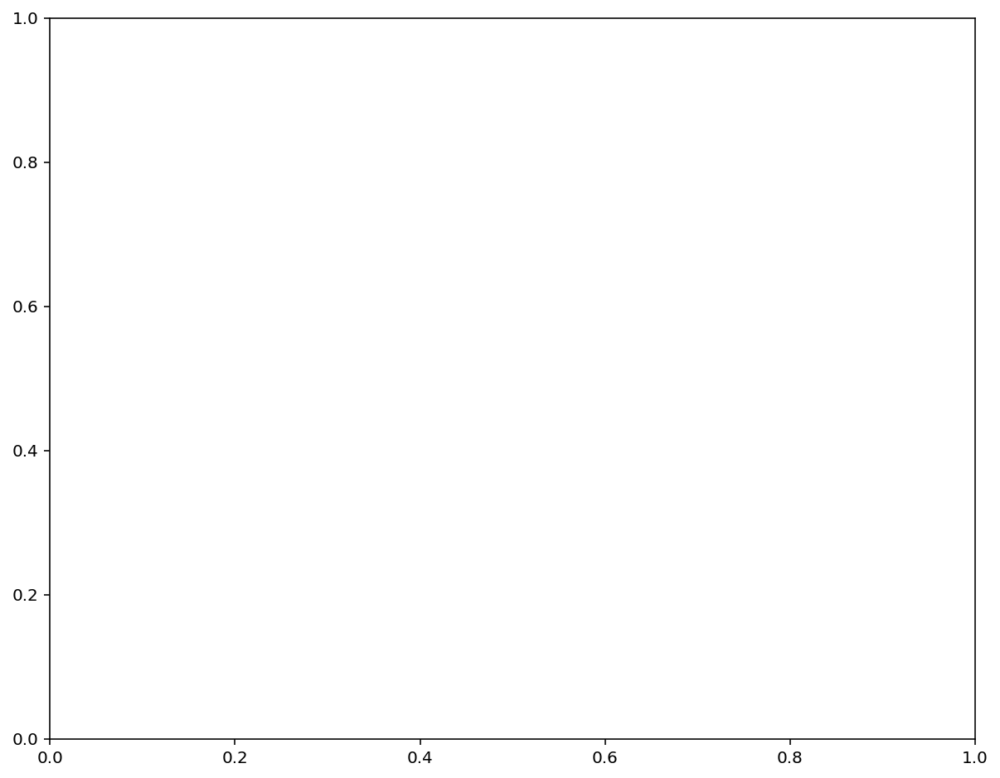
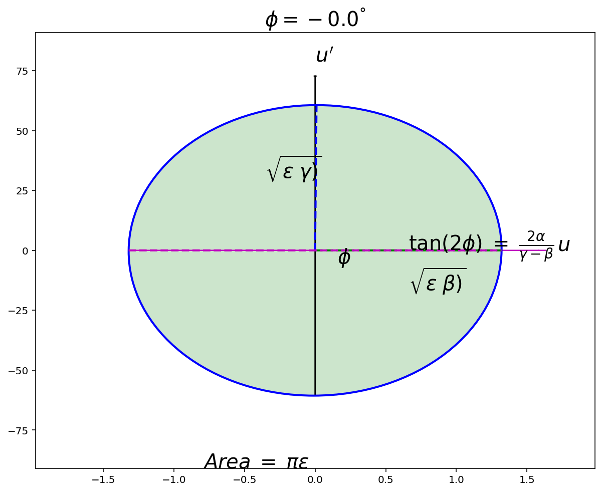

Optimize FLAME lattice¶
[2]:
from flame_utils import ModelFlame
from phantasy_apps.allison_scanner.data import draw_beam_ellipse_with_params
[3]:
import flame_utils
print(flame_utils.__version__)
0.3.11
[4]:
import numpy as np
[5]:
import matplotlib.pyplot as plt
%matplotlib inline
[6]:
def get_params(bs, xoy='x'):
"""Return a dict of parameters for draw_beam_ellipse_with_params().
"""
keys = [i.format(u=xoy) for i in
('{u}_cen', '{u}p_cen', '{u}_rms', '{u}p_rms', 'emit_{u}', 'emitn_{u}',
'alpha_{u}', 'beta_{u}', 'gamma_{u}', 'total_intensity')]
attrs = [i.format(u=xoy) for i in ('{u}cen', '{u}pcen', '{u}rms', '{u}prms',
'{u}emittance', '{u}nemittance',
'{u}twiss_alpha', '{u}twiss_beta')]
vals = [getattr(bs, attr) for attr in attrs]
gamma = (vals[6] ** 2 + 1.0) / vals[7]
vals.extend([gamma, 1.0])
return dict(zip(keys, vals))
[7]:
latfile = "../baseline.lat"
# latfile = '../PSv08_v1.3test.lat'
[8]:
# !xed ../PSv08_v1.3test.lat
[9]:
fm = ModelFlame(latfile)
[10]:
# fm.get_all_names()
[11]:
# fm.get_all_types()
[12]:
wed_ename = 'FS_F1S1:WED_D1184'
fp_ename = 'FS_F1S2:VD_D1466'
[13]:
fm.get_element(name=wed_ename)
[13]:
[{'index': 91, 'properties': {'name': 'FS_F1S1:WED_D1184', 'type': 'marker'}}]
[14]:
fm.get_element(name=fp_ename)
[14]:
[{'index': 199, 'properties': {'name': 'FS_F1S2:VD_D1466', 'type': 'marker'}}]
[15]:
r, s = fm.run(monitor=[wed_ename, fp_ename])
[16]:
r
[16]:
[(91, BeamState: moment0 mean=[7](0,0,0,0,0,0,1)),
(199, BeamState: moment0 mean=[7](0,0,0,0,0,0,1))]
[17]:
# before wedge
qnames1 = ['FS_F1S1:Q_D1013', 'FS_F1S1:Q_D1024', 'FS_F1S1:Q_D1035', 'FS_F1S1:Q_D1137',
'FS_F1S1:Q_D1148', 'FS_F1S1:Q_D1170',]
qnames_ = ['FS_F1S2:Q_D1195',
'FS_F1S2:Q_D1207',
'FS_F1S2:Q_D1218',
'FS_F1S2:Q_D1288',
'FS_F1S2:Q_D1299',
'FS_F1S2:Q_D1311']
qnames2 = ['FS_F1S2:Q_D1338', 'FS_F1S2:Q_D1349', 'FS_F1S2:Q_D1361', 'FS_F1S2:Q_D1430',
'FS_F1S2:Q_D1441', 'FS_F1S2:Q_D1453']
[18]:
qnames = qnames1 + qnames_ + qnames2
quads = fm.get_element(name=qnames)
x0 = np.array([q['properties']['B2'] for q in quads])
goals:¶
s1: x (alpha, beta) => -0.78243e-02, 0.25517e-01
s1: y (alpha, beta) => 0.19078e-01, 0.18034e-01
s2: x (alpha, beta) => 0.0797, 0.026
s2: y (alpha, beta) => 0.15e-4, 0.022
[19]:
from scipy.optimize import minimize
[20]:
def f(varr, goal_arr, ename1, ename2):
"""
varr: array of quads settings, B2 values
goal_arr: [alpha1_x, beta1_x, alpha1_y, beta1_y, alpha2_x, beta2_x, alpha2_y, beta2_y]
ename1,2: monitor name 1,2
"""
alpha1_x, beta1_x, alpha1_y, beta1_y, alpha2_x, beta2_x, alpha2_y, beta2_y = goal_arr
for vi, q in zip(varr, quads):
q['properties']['B2'] = vi
fm.configure(quads)
r, s = fm.run(monitor=[ename1, ename2])
s1 = r[0][-1]
s2 = r[1][-1]
return (s1.xtwiss_alpha - alpha1_x) ** 2 + (s1.xtwiss_beta - beta1_x) ** 2 + \
(s1.ytwiss_alpha - alpha1_y) ** 2 + (s1.ytwiss_beta - beta1_y) ** 2 + \
(s2.xtwiss_alpha - alpha2_x) ** 2 + (s2.xtwiss_beta - beta2_x) ** 2 + \
(s2.ytwiss_alpha - alpha2_y) ** 2 + (s2.ytwiss_beta - beta2_y) ** 2
[21]:
# wedge
goal_arr = [-0.0078243, 0.025517, 0.019078, 0.018034, 0.0797, 0.026, 0.15e-4, 0.022]
monitor_ename1, monitor_ename2 = wed_ename, fp_ename
[22]:
# res = minimize(f, x0, method='Nelder-Mead', tol=1e-6, args=(goal_arr, monitor_ename1, monitor_ename2))
[23]:
res = minimize(f, x0, method='Powell', tol=1e-6, args=(goal_arr, monitor_ename1, monitor_ename2))
[24]:
x0
[24]:
array([ 7.70411e+00, -9.23777e+00, 6.28775e+00, 5.29815e+00,
-6.21692e+00, 3.58421e+00, -9.39705e+00, 8.18561e+00,
-4.75744e+00, -9.28797e-05, 2.24429e+00, -2.51767e+00,
1.83683e-01, -2.74805e+00, 4.77866e+00, 1.25422e+01,
-9.01418e+00, 5.30723e+00])
[25]:
res.x
[25]:
array([ 7.79473103, -9.18807924, 6.24578581, 5.27341477, -6.1957296 ,
3.53955569, -9.10498601, 8.24153245, -4.60637336, 0.18897007,
2.22695055, -2.5203991 , 0.13882879, -2.769243 , 4.75020126,
12.32214696, -9.57217788, 6.84504695])
[26]:
f(res.x, goal_arr, monitor_ename1, monitor_ename2)
[26]:
0.0024345466393459066
[27]:
r, s = fm.run(monitor=[monitor_ename1, monitor_ename2])
[28]:
s = r[0][-1]
s.xtwiss_alpha, s.xtwiss_beta, s.ytwiss_alpha, s.ytwiss_beta
[28]:
(-0.007680426832312324,
0.02177950740021603,
0.018697593144410128,
0.015553859496591924)
[29]:
s = r[1][-1]
s.xtwiss_alpha, s.xtwiss_beta, s.ytwiss_alpha, s.ytwiss_beta
[29]:
(0.07899062880491795,
0.07455506478268008,
-0.0038054755807712193,
0.015552696266987204)
[30]:
fig1, ax1 = plt.subplots(figsize=(10, 8))

[31]:
r, s = fm.run(monitor=[wed_ename, fp_ename])
[32]:
get_params(r[1][-1], 'x')
[32]:
{'x_cen': 0.0,
'xp_cen': 0.0,
'x_rms': 1.221106586511033,
'xp_rms': 0.016429604417027947,
'emit_x': 19.999999999557716,
'emitn_x': 13.791556487151023,
'alpha_x': 0.07899062880491795,
'beta_x': 0.07455506478268008,
'gamma_x': 13.496595065299392,
'total_intensity': 1.0}
[33]:
xoy = 'x'
params = get_params(r[0][-1], xoy)
draw_beam_ellipse_with_params(params, color='b', factor=4, ax=ax1, xoy=xoy, fill='g', anote=True)
[33]:
(<matplotlib.patches.Ellipse at 0x7fb4cdd60340>, None, None)
[34]:
fig1
[34]:

[284]:
fm.generate_latfile("../baseline-opt1.lat")
[284]:
'../baseline-opt1.lat'
[ ]: